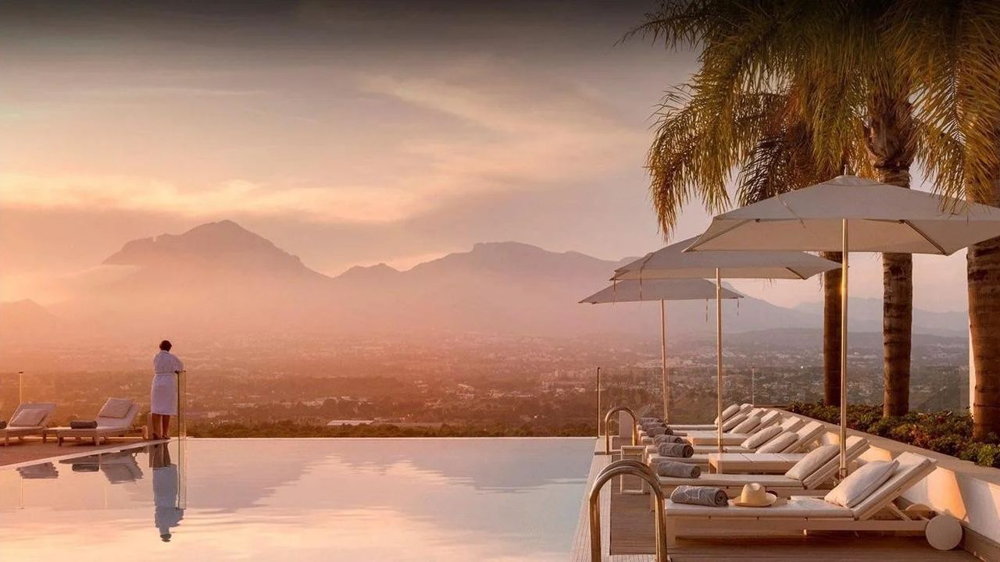
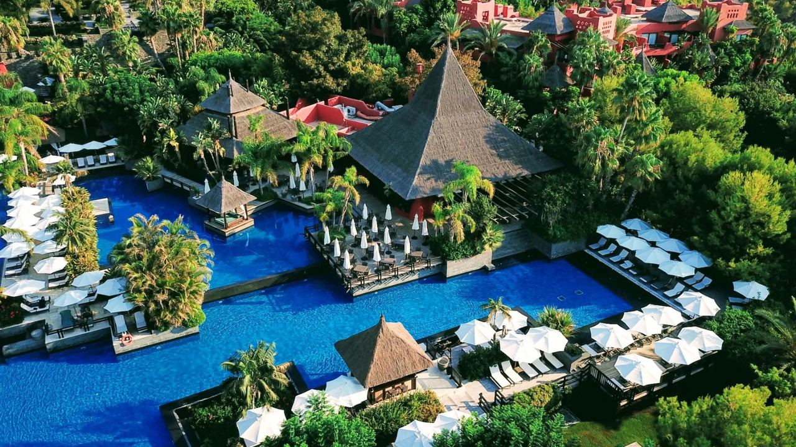
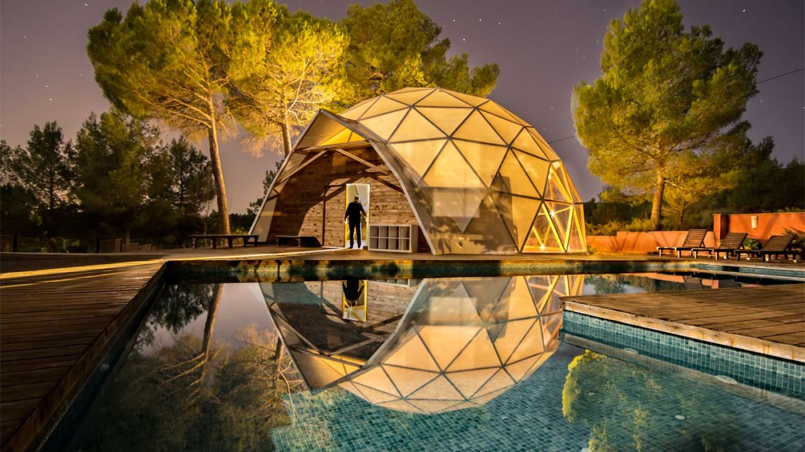
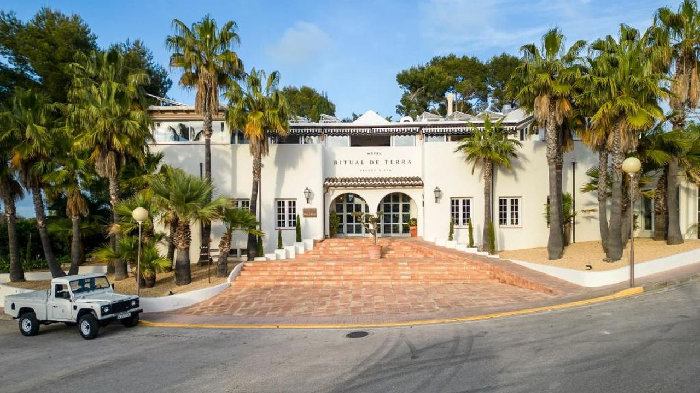
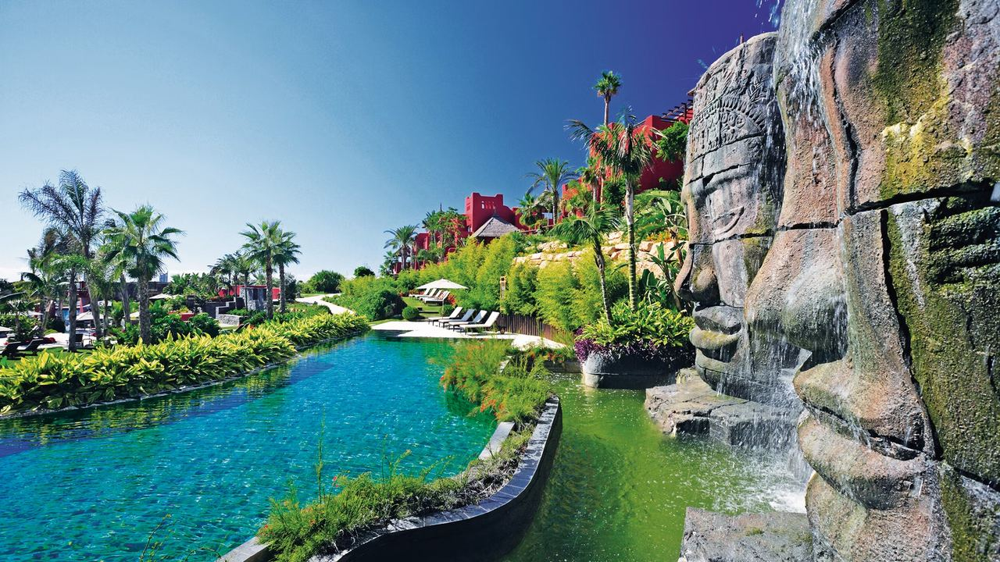
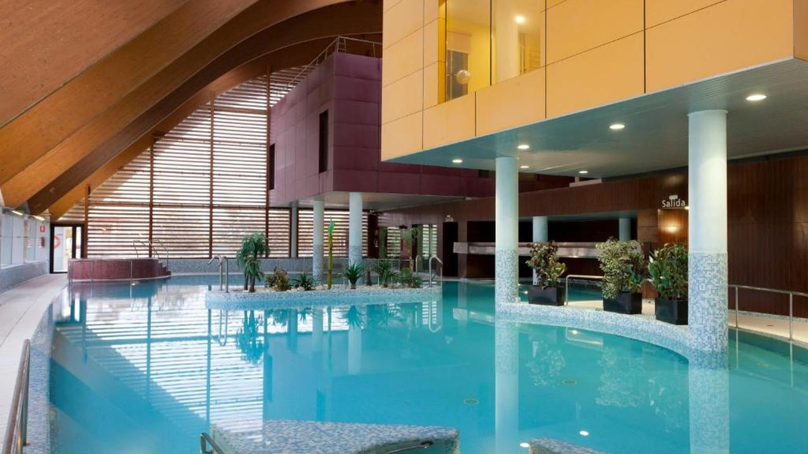

Orte · Costa Blanca
Wellness-Retreats an der Costa Blanca
 Von Lucyna Gacek · · aktualisiert · 3 Min. Lesezeit
Von Lucyna Gacek · · aktualisiert · 3 Min. Lesezeit

Kurz gesagt: Die Costa Blanca bietet Wellness für jeden Stil. Die SHA Wellness Clinic in L'Albir hat medizinische Detox- und Longevity-Programme, MasQi in der Sierra de Mariola ist ein ruhiges Yoga-Retreat in den Bergen, Ritual de Terra in Jávea ein Boutique-Spa-Hotel, Asia Gardens bei Benidorm pure Luxusentspannung, und Thalasia in San Pedro del Pinatar, knapp südlich in Murcia, setzt auf Meerwasser und Schlamm.
Morgens am Mittelmeer fühlt sich alles anders an: weiches Licht, warme Luft auch im Winter und keine Eile. Deshalb ist die Costa Blanca zu einem der beliebtesten Orte Europas für einen echten Neustart geworden, vom medizinischen Programm bis zum einfachen Spa-Wochenende. Hier sind fünf ganz unterschiedliche Adressen und für wen sie passen.
SHA Wellness Clinic – L'Albir

Am Hang der Serra Gelada zwischen Altea und Benidorm gehört SHA zu den bekanntesten medizinischen Wellnesskliniken Europas. Die Aufenthalte verbinden ärztliche Untersuchungen, individuelle Ernährung, Fitness und Naturheilverfahren, mit Programmen für Detox, Schlaf, Gewicht und gesundes Altern. Die Tage sind strukturiert, die Ergebnisse messbar.
Ideal für: begleiteten Detox, Vorsorge und alle, die ihren Lebensstil wirklich ändern wollen. Es fühlt sich eher nach Klinik als nach Urlaub an, und genau darum geht es.
MasQi, The Energy House – Sierra de Mariola

Im Landesinneren, im bewaldeten Naturpark Sierra de Mariola, bietet MasQi Yoga, Meditation, Wanderungen und pflanzliche Küche in kleinen Gruppen. Kein Nachtleben, kein Beach Club und kaum Handyempfang.
Ideal für: Digital Detox und einen tieferen, stillen Neustart. Viele Gäste finden eine Woche in den Bergen erholsamer als jedes Spa am Meer.
Ritual de Terra – Jávea

Ein Boutique-Hotel mit mediterraner Architektur, Spa und ruhigem, zurückhaltendem Stil im Hinterland von Jávea. Ideal für kurze Auszeiten mit Yoga, Anwendungen und Küstenwanderungen ohne festes Programm. Außerhalb von Juli und August ist Jávea einer der friedlichsten Orte der Küste.
Ideal für: Paare und alle, die Design und einen ausgewogenen Spa-Aufenthalt schätzen.
Asia Gardens Hotel & Thai Spa – Finestrat

Ein Fünf-Sterne-Resort in den Hügeln über Benidorm mit tropischen Gärten, mehreren Pools und einem Thai-Spa. Kein medizinisches Retreat: Hier zählen Entspannung, gutes Essen und eine Massage in schöner Umgebung.
Ideal für: luxuriöse Spa-Wochenenden und komplettes Abschalten.
Thalasia – San Pedro del Pinatar

Knapp südlich der Costa Blanca, am Mar Menor in Murcia, ist Thalasia auf Thalassotherapie mit Meerwasser spezialisiert. In der Nähe, in Lo Pagán, werden die natürlichen Schlammbäder der Salinen seit Generationen für Gelenke und Haut genutzt.
Ideal für: Kreislauf, Gelenke, sanfte Erholung und kurze Gesundheitsauszeiten.
So wählen Sie richtig
- Sie wollen messbare Ergebnisse und ärztliche Begleitung? Ein Klinikprogramm wie bei SHA.
- Sie brauchen Stille und Natur? Ein Retreat in den Bergen.
- Sie suchen eine kurze, schöne Auszeit? Ein Boutique- oder Luxus-Spa-Hotel.
- Sie haben Gelenk- oder Kreislaufprobleme? Thalassotherapie und Schlammbäder am Mar Menor.
Buchen Sie für Frühling und Herbst früh, das sind die beliebtesten Zeiten, und prüfen Sie, was enthalten ist: Medizinische Tests und manche Anwendungen kosten oft extra. Für die Costa del Sol lesen Sie unseren Ratgeber Wellness-Retreats in Marbella.
Häufige Fragen
Welches ist das beste Wellness-Retreat an der Costa Blanca?
Das hängt vom Ziel ab. SHA in L'Albir ist die führende medizinische Wellnessklinik, MasQi ein ruhiges Yoga-Retreat in den Bergen, Asia Gardens und Ritual de Terra sind Spa-Hotels für entspannte Auszeiten.
Wo liegt die SHA Wellness Clinic?
In L'Albir (L'Alfàs del Pi), am Hang der Serra Gelada zwischen Altea und Benidorm, etwa 50 Minuten vom Flughafen Alicante.
Wann ist die beste Zeit für ein Wellness-Retreat an der Costa Blanca?
Frühling und Herbst, wenn es warm, aber nicht heiß ist. Auch der Winter ist mild und ruhiger.
Gibt es an der Costa Blanca Schlammbäder?
Die bekanntesten liegen knapp südlich in Lo Pagán (San Pedro del Pinatar) am Mar Menor. Der Schlamm der Salinen ist frei zugänglich.
Von einer Woche zum Alltag
Für viele beginnt mit einer Wellnesswoche an der Costa Blanca eine Idee: Könnte dieser langsamere Rhythmus Alltag werden? Wenn Sie an ein Zuhause nahe dem Meer oder den Bergen denken, schreiben Sie uns. Wir helfen Ihnen, die Gegend zu finden, die zu Ihrem Leben passt.